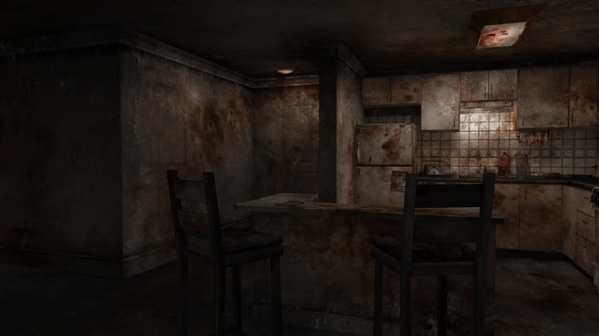

About the project
Why Silent Hill 4?
Silent Hill 4 was a big part of my childhood, and there’s a lot of nostalgia there for me. It was one of those games I actually stayed home from school to finally beat on my birthday. It holds a special place in my memories, and it’s even become part of my personality. There’s no other game out there like The Room. It gives me this dreadful yet oddly comforting feeling that nothing else can replicate. When I think about this game and the potential it has, or when I talk with friends about the story, the background, and what it could have been, it drives my imagination crazy.
This project originally started with me just wanting a darker environment in the Subway with a flashlight, just like in the previous installments. That would never have been possible for me when I first had the idea back in 2017, almost a decade ago. I have pages and pages in my notebook with ideas for levels, changes, and additions, and even a deep dive into the religious and cult side of the story. That’s what keeps my creativity going.
I think Silent Hill 4 deserves more appreciation. The clunky mechanics and rough edges held it back, and I don’t blame Team Silent for that. My goal is to give The Room the same polish as the other three games so it feels complete. I’d love for people to remember it for more than being the odd one out of the first four.
I also want this to feel welcoming to newcomers. If you’re playing Silent Hill 4 for the first time today, I can see how fighting with Henry’s controls just to land a hit could leave a bad taste in your mouth. That’s a big part of why I feel like this one needs a little more love than the other three. I want it to be easier to pick up, for Henry to respond the way you expect, and for the fights to keep you engaged. My hope is that you’ll want to stick around and dig a little deeper with me into the stories the game never got to tell.
If there’s something you’d like to see added, changed, or taken out, I’d love to hear it. That goes for any new mechanic you think would fit The Room, too. Join Discord and tell me about it.

How I work on the game
Monitoring tools
I use a plethora of tools to record camera positions, enemy behavior, animations, and a ton of other things going on in the game. We can go back through those logs and see what went wrong, what needs to change, and what’s missing. It’s a tedious process, and it takes a lot of trial and error to get everything ironed out. It’s an old game from the early 2000s, after all.
Level Studio
This is our main all-in-one tool for Silent Hill 4: The Room. I go through every room in the 3D editor, where I can grab, place, move, and scale props throughout each level. Then I can walk around as Henry and see if a prop needs to move, if there’s a sound I should add, or if I want to change something else in the environment.
A lot of the textures have baked-in shadows, so moving a prop can look wonky in-game. It takes some trial and error to get the room looking the way I want it to.
Sequence editor
This custom-built tool lets me create sequences that never played out in the original game. I can use it to add atmosphere or put together a cool cutscene. I haven’t done too much with it yet, but I can see the potential.
How I used AI
I’m going to be honest. This wouldn’t be possible without AI tools. I wouldn’t call this AI slop or a one-prompt shop. This took months and months of trial and error, experimenting, logging, playing over and over, testing, and ironing things out. You can’t just send one prompt and call it done.
AI was a big help in this. It helped build the car, but I was the one behind the wheel. I know using AI is controversial. For me, it helps to be able to read through what’s actually happening behind the scenes of the game. That’s how we get a better understanding of the mechanics, what was cut, and what actually got used.
If you’re interested in how I use AI here, message me personally. Join Discord and we can chat about it.
 Join Discord
Join Discord
Is there a room you wish you could return to, or a fight you’d change? Join Discord and tell me about it. A few lines are plenty.
Support the Ritual
If you’d like to chip in while I work on Sacrament Edition, leave your handprint on the Wall of the 21 Sacraments.
Image credits and further reading
The photograph of Henry at the chained door and the keys used in the browser icon come from the Silent Hill Memories Room 302 archive and its item collection. The project supplied the title logo, menu lettering, gameplay captures, and development renders.
Akihiro Imamura and Akira Yamaoka discuss the missing mid-level bosses, the ghosts, melee combat and an early HUD layout in their March 2005 postmortem for Game Developer.